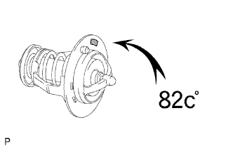
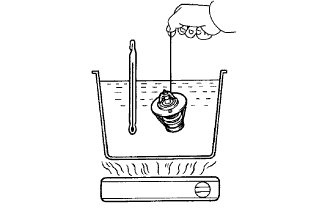
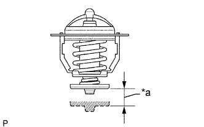

ТЕРМОСТАТ > ПРОВЕРКА |
| 1. ПРОВЕРЬТЕ ТЕРМОСТАТ |
|  |
|  |
Погрузите термостат в воду и медленно нагрейте ее.
Проверьте температуру открывания клапана.
|  |
Проверьте ход клапана.
| *a | Высота подъема клапана |
Убедитесь, что при низкой температуре термостата (ниже 77°C (171°F)) клапан полностью закрывается.
Если он закрывается не полностью, замените термостат.